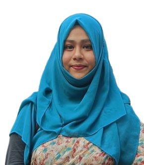
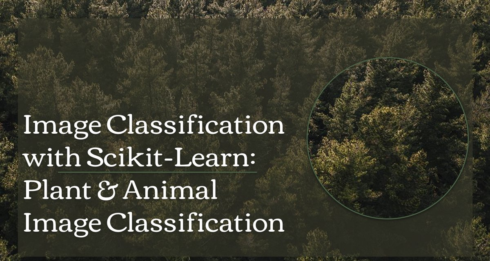
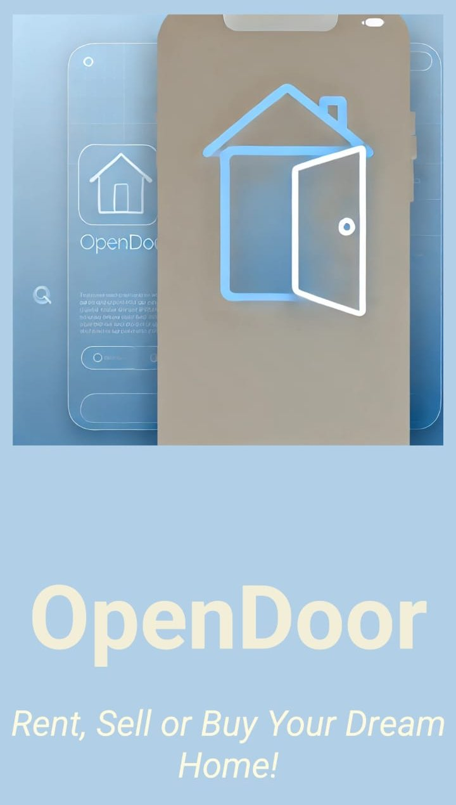
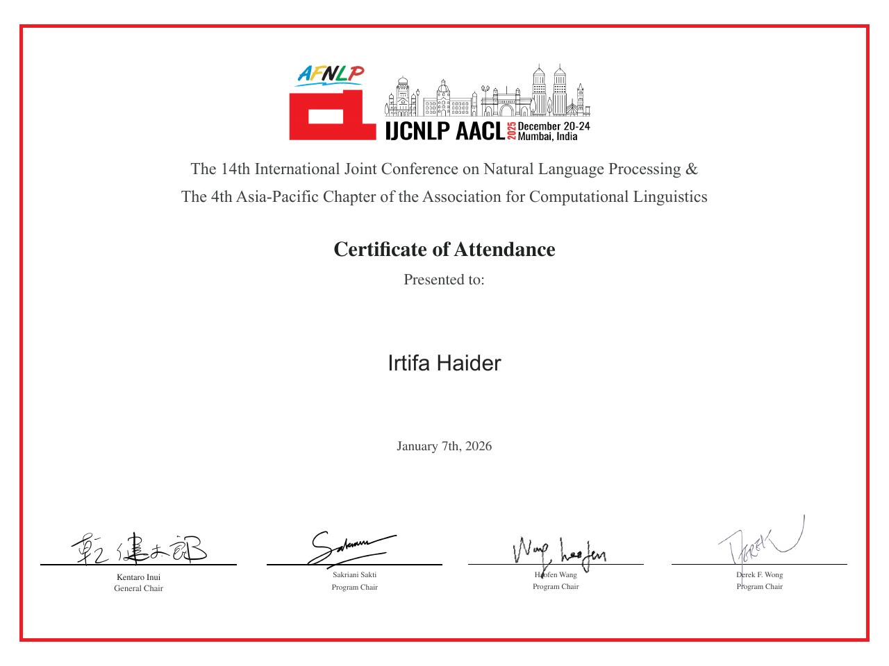
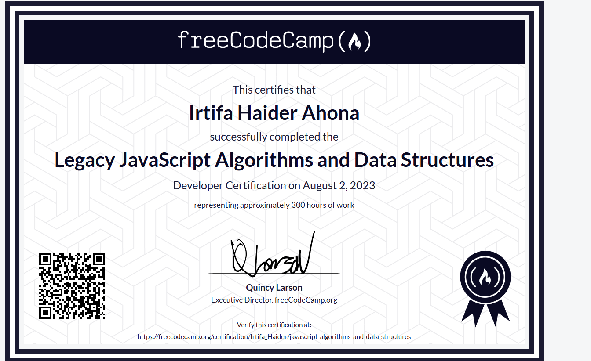
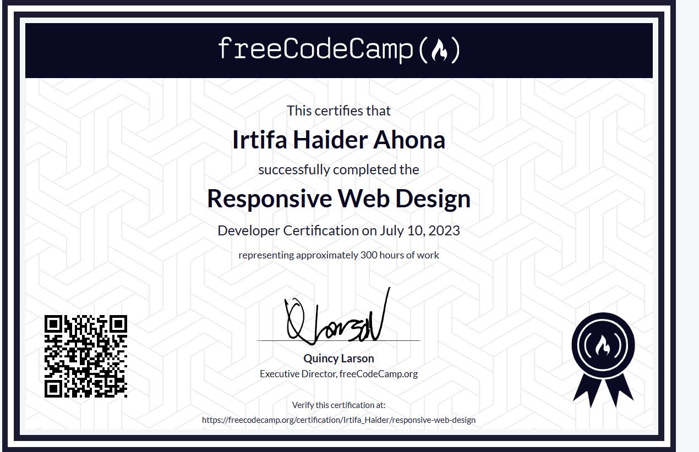
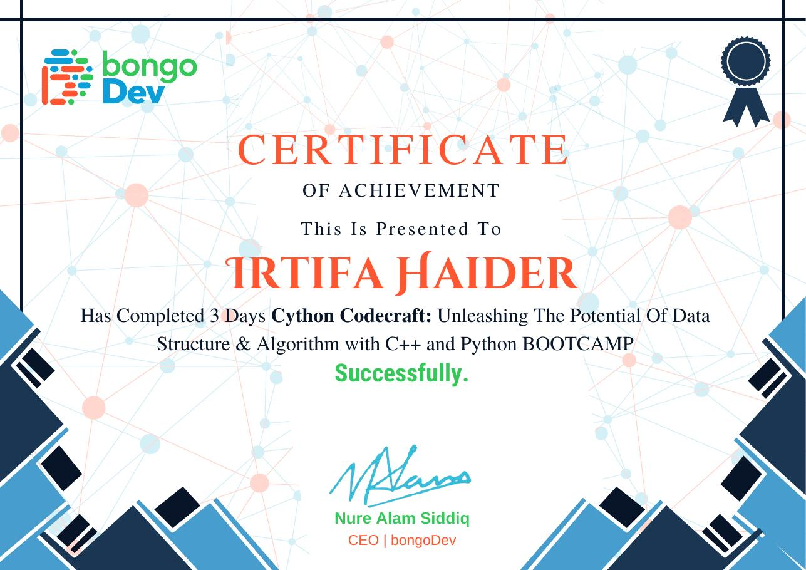

MSc in Computer Science and Engineering
Jahangirnagar University, Savar, Dhaka, Bangladesh
Courses: Natural Language Processing, Machine Intelligence and Expert Systems, Network Security, Distributed Database, Advanced Neural Network
Hi, I'm
MSc Student in Computer Science and Engineering
Jahangirnagar University, Bangladesh

I am an MSc student working on Natural Language Processing, with a focus on Bangla, a language that still has far fewer ready-made NLP resources than English. My recent work studies how text optimization and transformer-based language models can improve Bangla text summarization. I am also working on the reliability of large language models in low-resource languages, and I am interested in information retrieval and graph-based data mining.
Research interests
Planned and executed test cases (smoke, acceptance and manual testing) and reported defects in Jira.
Taught Scratch and Python to children through project-based lessons.
Jahangirnagar University, Savar, Dhaka, Bangladesh
Courses: Natural Language Processing, Machine Intelligence and Expert Systems, Network Security, Distributed Database, Advanced Neural Network
Jahangirnagar University, Savar, Dhaka, Bangladesh
CGPA 3.43/4.00
Thesis: The Star Paradigm: Redefining Social Network Clustering
Irtifa Haider, S. Alam, M. T. Hossan, M. M. Anwar, T. T. Aurpa. A Comprehensive Text Optimization Approach to Bangla Summarization. Proceedings of the Second Bangla Language Processing Workshop (BLP), co-located with the 14th International Joint Conference on Natural Language Processing (IJCNLP–AACL), 2025. BLP 2025 Paper
My technical level
My existing projects

Built a machine-learning pipeline to classify 18 plant types using HOG features and SGD/SVM classifiers, reaching 80% accuracy through feature extraction and model tuning.
CodeDesigned a cost-effective IoT system that optimizes power distribution across solar, grid and battery sources, prioritizing critical loads to improve energy efficiency.
CodeAndroid app that streamlines residential services (service requests, payments, events and alerts), with a Firebase backend for dashboards, parking and amenities booking.
Code
Built an Android app that simplifies property rental and purchase through aggregated listings and filtering, with real-time alerts and a mortgage calculator.
CodeBuilt a community platform for Jahangirnagar University CSE alumni with event management and member directories, using a Django REST API backend and a React frontend.
CodeDeveloped a web platform for managing IT training courses, trainers and participants, using the Model–View–Controller (MVC) architecture for maintainability.
CodePresented a paper at IJCNLP–AACL 2025 (14th International Joint Conference on Natural Language Processing and 4th Asia-Pacific Chapter of the ACL).
Solved 400+ problems on Codeforces, AtCoder and LeetCode.
Competed in the preliminary round of the International Collegiate Programming Contest (ICPC) and participated in the preliminary round of the National Collegiate Programming Contest (NCPC).
Government Board Merit Scholarships for JSC (2014) and SSC (2017).
Click a certificate to open it

Add images/certificates/ijcnlp-aacl-2025.jpgJanuary 7, 2026

Add images/certificates/fcc-js-algorithms.pngfreeCodeCamp · August 2, 2023

Add images/certificates/fcc-responsive-web-design.pngfreeCodeCamp · July 10, 2023

Add images/certificates/dsa-bootcamp-cython-codecraft.jpgbongoDev · 3-day bootcamp
bongoDev · 2-week bootcamp
 Add images/certificates/fe-exam-2024.jpg
Add images/certificates/fe-exam-2024.jpg
2024
Participate in environmental conservation initiatives, awareness campaigns and community outreach programs.
National Collegiate Programming Contest, Jahangirnagar University. Assisted with on-site logistics, venue management and communication with committees.
I am happy to hear from prospective supervisors and collaborators
Department of Computer Science and Engineering, Jahangirnagar University, Savar, Dhaka, Bangladesh